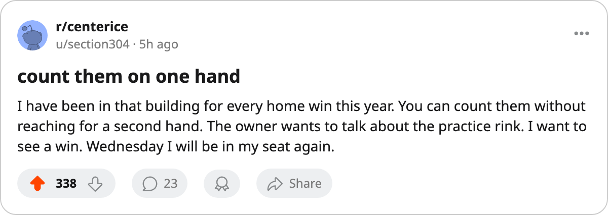
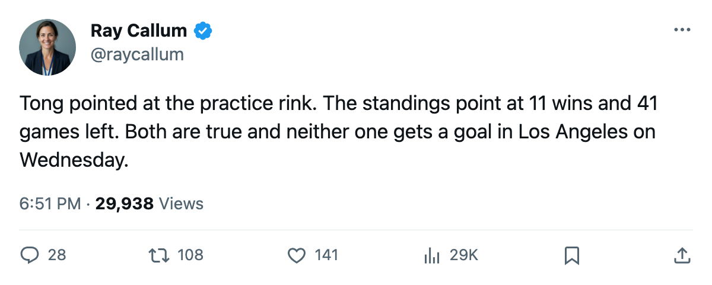

San Jose Has Not Won in 13; Its Owner Points at the Practice Rink
The Sharks have 3 home wins, 32 points and the fewest injury days in the league. Jules Tong says the front end of the building is where the gap is.
 Ray CallumSenior correspondent · Home Ice Network
Ray CallumSenior correspondent · Home Ice NetworkSan Jose has not won in 13 games. The  San Jose Sharks have 3 home wins in 20 tries, 32 points and last place in the West, and the man who owns the club has stopped talking around the number.
San Jose Sharks have 3 home wins in 20 tries, 32 points and last place in the West, and the man who owns the club has stopped talking around the number.
Jules Tong watched the slide from the top of the building. After a 3-2 loss at  Nashville Predators on 2006-01-07 he told The Tunnel's Jan Kowalczyk the roster has been asked to train in a building that will not let it.
Nashville Predators on 2006-01-07 he told The Tunnel's Jan Kowalczyk the roster has been asked to train in a building that will not let it.
"I've got an equipment room that's the best in this league. Level 5. That's not a problem area," Tong told The Tunnel. "But our practice rink is at zero. Our workout room is at one."
The roster has been available. San Jose has lost 28 days to injury this season, the fewest in the league.  Tampa Bay Lightning is next at 45, and
Tampa Bay Lightning is next at 45, and  Toronto Maple Leafs, which leads the East, has lost 72.
Toronto Maple Leafs, which leads the East, has lost 72.
 Evgeni Nabokov89 has started 32 of the club's 41 games, a 78-percent share.
Evgeni Nabokov89 has started 32 of the club's 41 games, a 78-percent share.  Jeff Hackett85 has taken 9 and
Jeff Hackett85 has taken 9 and  Miikka Kiprusoff77 1. Over the last 10 games San Jose has scored 21 goals and conceded 33.
Miikka Kiprusoff77 1. Over the last 10 games San Jose has scored 21 goals and conceded 33.
The Road Gets No Easier
Three of the next four are away from home, beginning 2006-01-11 at  Los Angeles Kings. The clubs have met 3 times this season; Los Angeles holds a 10-9 edge in goals, and the Kings have won 3 straight.
Los Angeles Kings. The clubs have met 3 times this season; Los Angeles holds a 10-9 edge in goals, and the Kings have won 3 straight.
Tong's stated plan is a roster that can win 40 games. San Jose has 11 wins, with 41 games left.

